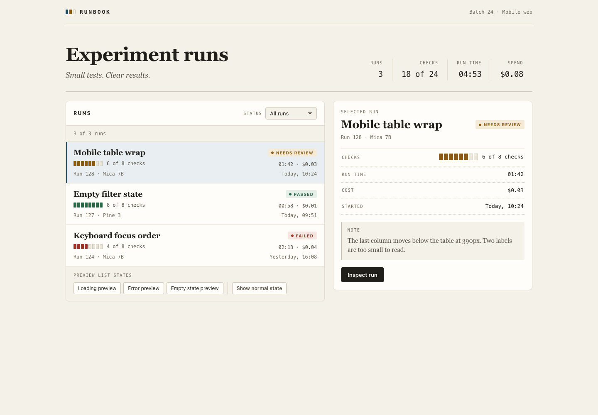
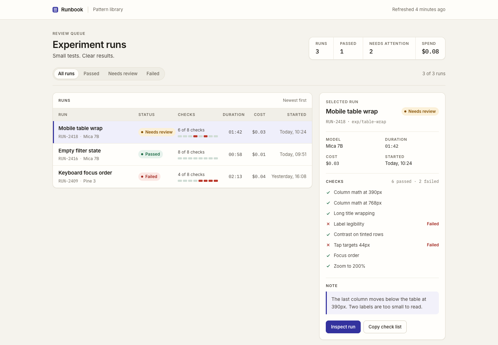
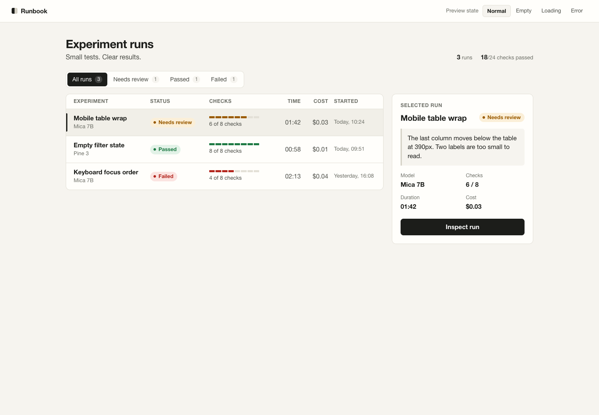
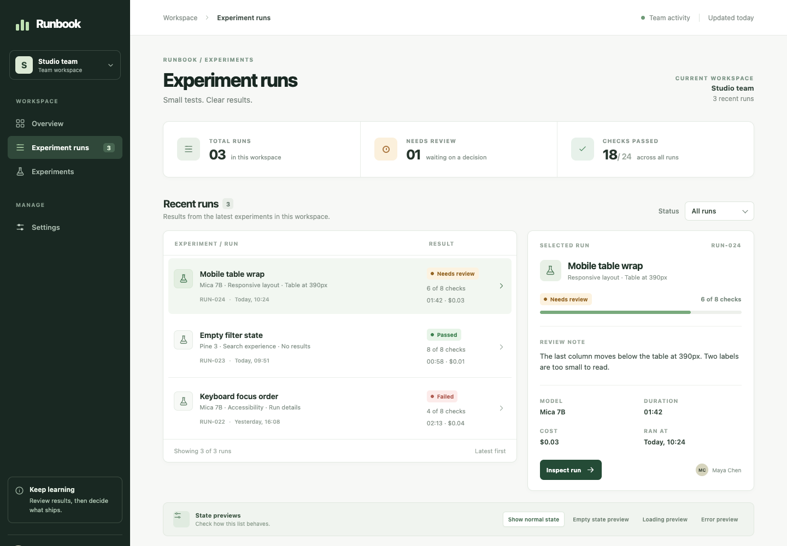
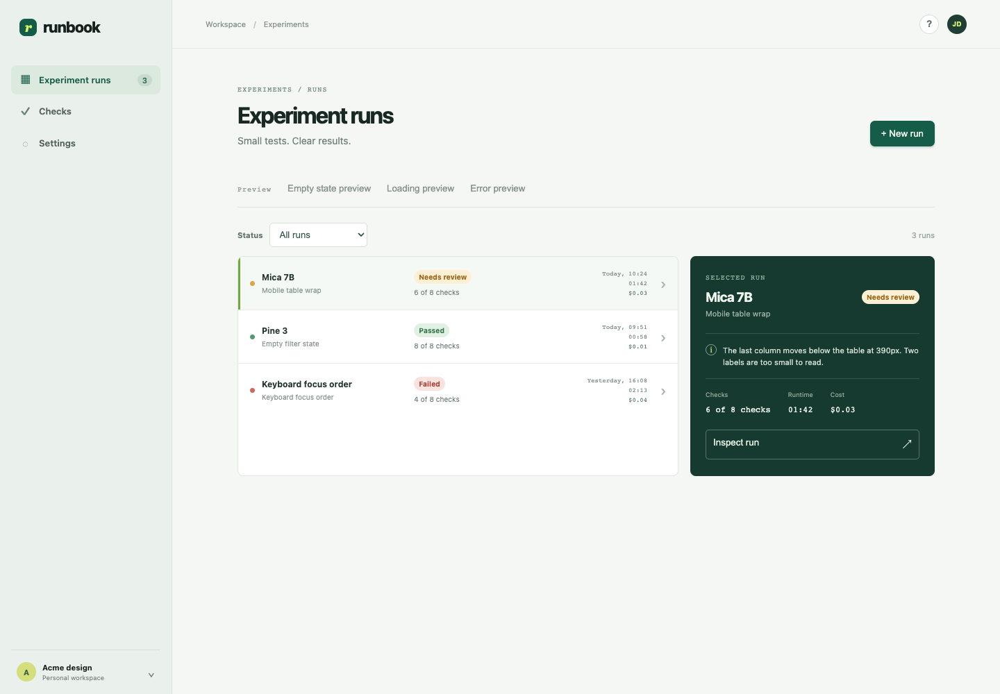

A small design test · September 2026
One brief.
Six dashboards.
I gave six coding agents the same React starter and asked for a clean dashboard to review software experiments. The brief left the layout and components up to them. Here are the working pages, not just screenshots.
Open a page and try it
Filters, selected runs, keyboard controls and preview states are worth a look.

MiMo V2.6 Pro
Paper tones, strong type and a close list/detail pairing.

DeepSeek V4.1 Flash
A dense run table with a separate review pane.

Claude Opus 5.5
A compact table, preview controls and detail panel.

GPT-6 Sol
A green navigation rail and roomy run workspace.

GPT-6 Luna
List-first layout with a compact review panel.

GPT-5.6 Luna
Pale navigation rail with a dark detail panel.
What they were given
Room to make choices.
Each agent could inspect the same fixture, write React components and styles, and run the shared checks. Five started with dependencies installed from the shared lockfile. MiMo did not; its run spent time installing them. No equal token limit was imposed.
Make a clean dashboard for Runbook. It is a small app page for a team reviewing short software experiments, not a landing page. Look through the project and tests, choose your approach and any packages you think will help, then build the page. Run the UI tests and production build. Fix what you find and tell me when you are done, or what you could not complete. The data is synthetic. Do not edit the shared tests, fixtures, or harness configuration.
The five later runs added one sentence clarifying that base packages were already installed. The system prompt also asked for a considered, content-led interface. Read the exact prompts, costs and limits.
What I actually checked
- Production builds
- 6 passed
- Shared UI checks
- Five 5/5; one 4/5
- Desktop and mobile
- Chromium captures
- Completed runs
- Six
- Known run cost
- $1.2148 total
The 4/5 result came from a test looking for a named “region” where the page used a labelled <aside>. That is a fixture mismatch, not proof of an accessibility defect. The browser capture checked initial rendering and overflow; it did not manually exercise every control. These pages run on synthetic data and store nothing remotely.
{kind=link}